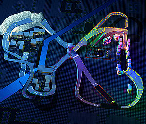

|
| Sonic R course images |
|
Resort Island Resort Island Make it a little bigger! |
This course is based on the first zone in most Sonic games, a southern island full of nature. A clear blue sky and a landscape surrounded by water and greenery unfold. It is an oval course for start to finish, but it is only one course that runs along what is a road. You could go up the cliffs or go in the water without being bound by roads. The ocean and ponds are dotted with small islands, so Sonic can take shortcuts by jumping across them. With Tails and Knuckles, who can fly/glide, as well as Amy and Robotnik, who can float on water, it's inevitable that even Sonic's fastest legs will struggle. There are also former port towns, forests, high mountains, and tunnels along the way. Make good use of these hidden paths to find your best route. At the end of the course, a traditional loop awaits you. |
{kind=link}
| 
Radical City Radical City Make it a little bigger! |
The course will take you through the city at night, full of neon lights. The course is like a roller coaster, with many ups and downs that you have to get through at high speed. Sonic and Tails can increase their speed by curling up and running downhill. One of the key points of this course is to run through it at speed. In the middle of the course, there are some roadblocks, and there are many directions you can go during the race, such as taking the right road, the left road, or dropping down and going on the ground. On the other hand, Amy and Robotnik can use their special skills to get through the waterways in the city, and it is up to the player to decide which character to use and which route to take. In the second half of the course, a huge pinball area awaits you, and you will be going through the city reminiscent of a Las Vegas casino. |
{kind=link}
|
Regal Ruin Regal Ruin Make it a little bigger! |
This mysterious course is set in the ruins of the South Sea. You go through a huge, beautiful, ancient civilization that reminds you of its former glory. Immediately after the start, the road is open, but once you pass the sphinx that looks just like Knuckles, it's like a maze. In addition, there are zigzagging hills to run down, stairs to run up, and other routes with a lot of height differences. As you run for it, you may lose trakc of where you're going. It also has the morst sharp curves of all the courses, requiring good cornering techniques However, because of this course, if you're good at following the hidden routes, you may suddenly reach the top. Some of the hidden routes include the only traditional loop. This is a course for adventurers who want to challenge themselves again and again. |
{kind=link}
|
Reactive Factory Reactive Factory Make it a little bigger! |
Dr. Robotnik has converted a deserted island that no one knows about into a secret base. You will go through the factory area in such an isolated island. There is not the slightest trace of nature, and the course is made up of many layers, like a highway. There is a submarine surfacing at sea, a secret small room where many rings are stored, and many other secrets in Robotnik's base. The course also features a series of long banks and hairpin curves. When going through this course, cornering using the banks is the key. You can also use the secret routes to take shortcuts on seemingly roundabout paths. So even if you think you're in first place, you may find that you'll rapidly drop places. |
{kind=link}
| For those who beat all of the courses, one last course will be available... |
|
|